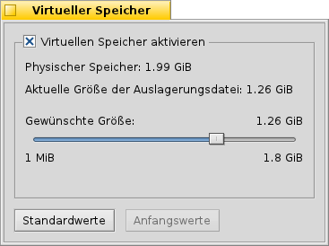

Deutsch
Deutsch Français
Français Italiano
Italiano Русский
Русский Español
Español Svenska
Svenska 日本語
日本語 Українська
Українська 中文 ［中文］
中文 ［中文］ Português
Português Suomi
Suomi Slovenčina
Slovenčina English
English Virtueller Speicher
Virtueller Speicher
| Deskbar: | ||
| Ort: | /boot/System/preferences/Virtueller Speicher | |
| Einstellungen: | ~/Konfiguration/settings/kernel/drivers/virtual_memory ~/Konfiguration/settings/VM_data - Speichert die Position des Programmfensters. |
Wenn dem Betriebssystem virtueller Hauptspeicher zur Verfügung steht, kann es im RAM gespeicherte Daten auf die Festplatte auslagern, um den Hauptspeicher besser verwenden zu können. Selbst wenn dem System eine große Menge an RAM zur Verfügung steht, ist es sinnvoll, virtuellen Speicher zu aktivieren.
Die Größe des virtuellen Hauptspeichers ist nur durch die Größe des Datenträgers begrenzt, auf dem er angelegt wird. Da er normalerweise auf die Boot-Partition geschrieben wird, sollte man per Datenträgerbelegung hin und wieder nachsehen, ob der virtuelle Hauptspeicher daran schuld ist, wenn der Plattenplatz zur Neige geht.
Das Auslagern von RAM-Inhalten in einen virtuellen Hauptspeicher und das Zurückschreiben hat natürlich sehr viele Festplattenoperationen zur Folge. Hierdurch kann die Systempartition verlangsamt werden. Wenn im System eine weitere Festplatte vorhanden ist, bietet es sich an, den virtuellen Hauptspeicher auf diese zu legen.
Für virtuellen Hauptspeicher im Vergleich zu echtem RAM gilt: mehr RAM ist immer besser als mehr virtueller Speicher.
| setzt alles auf Standardwerte zurück. | ||
| setzt die Werte auf den Wert zurück, die aktiviert waren, als Virtueller Speicher gestartet wurde. |